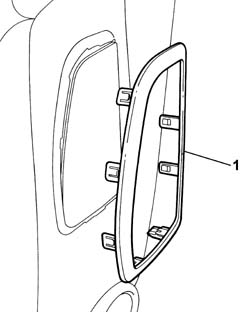
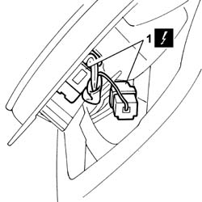
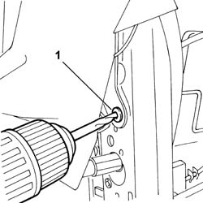

5580C44 FRONT SIDE BAG MODULE ONE LH OR RH R R
- Path
- Procedures > 55 ELECTRICAL EQUIPMENT > 5580 SPECIAL ACCESSORIES > 5580C AIR BAG SYSTEM > 5580C44 FRONT SIDE BAG MODULE ONE LH OR RH R R
- Kind
- repair procedure (removal / refitting; the operation number is the code)
- Applies to
- all engines; all production periods
- Interactive page
- https://sloeber94.github.io/elrnDB-fUlss/en/#/179007633
Applies to: all engines; all production periods
 Removing
Removing
 Refitting
RefittingApplies to: all engines; all production periods
Op. 7045A10 L/H OR R/H FRONT SEAT (ONE) - R+R
Op. 7045A98 FRONT SEAT REAR POUCH PANEL, LH OR RH - R R
Op. 7045A25 SQUAB LUMBAR KNOB - R R
Op. 7045A43 SEAT EXTERIOR GUARD - R R
Op. 7045A44 SEAT INTERIOR GUARD - R R
-
 | Description | Code | Function |
|---|---|---|---|
. | Knife | 1.878.077.000 | Release the fastening buttons |
-

Applies to: all engines; all production periods
1. Release the AIR BAG module from the fastening hook and disconnect the electrical connections.

Applies to: all engines; all production periods
1. Using a drill fitted with a suitable size helical point, remove the rivet fastening the AIR BAG frame to the seat frame.

Applies to: all engines; all production periods
1. Remove the side AIR BAG module.
Applies to: all engines; all production periods
Refitting
RemovingApplies to: all engines; all production periods
- Visually inspect that the seat frame is not distorted or cracked.
- Check that the slots in the lower part of the backrest are not distorted.
- Check that the welding and the rivets sealing the joints between the backrest and the cushion are intact.
- Check for possible torsional distortion of the backrest by measuring the backrest frame diagonals.
- Check that the measurements are the same and that the intersection of the diagonals is at the centre of the backrest.
- Carry out all the movements for the seat functions checking that there is no sticking or noise.
- If a new Air Bag module is being fitted, position the labels.
- Remove the detachable part of the adhesive label for the new module and place it in the special file containing the vehicle details (model, registration date, chassis number) and the serial number of the old module. The file should be kept for future checks.
- A new adhesive label comes together with the module and should be stuck on top of the existing one. Beforehand, however, it should be perforated at the month and 10 years after the date when the module is fitted (e.g. 2009 for 1999).
Applies to: all engines; all production periods
- Visually inspect that the seat frame is not distorted or cracked.
- Check that the slots in the lower part of the backrest are not distorted.
- Check that the welding and the rivets sealing the joints between the backrest and the cushion are intact.
- Check for possible torsional distortion of the backrest by measuring the backrest frame diagonals.
- Check that the measurements are the same and that the intersection of the diagonals is at the centre of the backrest.
- Carry out all the movements for the seat functions checking that there is no sticking or noise.
- Fit the side AIR BAG module.
- Connect the electrical connections for the side AIR BAG module.
- Attach the side AIR BAG module to the fastening hook.
- Attach the seat upholstery in the area surrounding the AIR BAG.
- Using a suitable riveter and suitable size new rivets, fasten the side AIR BAG module frame to the seat frame.
- Attach the fastening clipsa and fit the side AIR BAG module.
- Fit the front AIR BAG module trim.
Op. 7045A44 SEAT INTERIOR GUARD - R R
Op. 7045A43 SEAT EXTERIOR GUARD - R R
Topics linked from this page (6)
- 7045A10 L/H OR R/H FRONT SEAT (ONE) - R+R
- 7045A13 FRONT SEAT WITH SIDE BAG R R
- 7045A25 SQUAB LUMBAR KNOB - R R
- 7045A43 SEAT EXTERIOR GUARD - R R
- 7045A44 SEAT INTERIOR GUARD - R R
- 7045A98 FRONT SEAT REAR POUCH PANEL, LH OR RH - R R